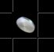
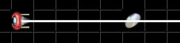
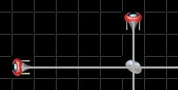
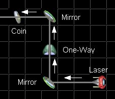

|
Solving a puzzle: Each level has several colored coins on it. In order to win a level you must make all of the coins on that level spin. | |
|  | This is a white coin waiting to be hit. You must hit it with a single white beam to make it spin. |
| Each level also has beams of light on it. A Coin spins when a beam of the same color crosses it. For example, a white coin will spin if a white beam is crossing it. | |
|  | This coin is correctly hit by a beam of the same color and will spin. Once all the coins are spinning the level is solved. |
| If you're just starting don't worry too much about the details of this next rule as it will become clearer as you play. A coin will not spin when it is crossed by two or more beams. That means that if a white coin has two white beams hitting it, it will stop spinning. Note that if the two beams crossing it are merged together to act as one beam then the coin will still spin. That is, if a white beam is coming in from directly above and another from directly below the beams will be merged and look like a single beam and the coin will behave as if they were a single beam. | |
|  | This coin is incorrectly hit by two beams of the same color and will not spin. One of the crossing beams must be blocked in some way. |
| Note that lasers are travelling in a direction. The direction can be determined by following a beam to it's source laser. Direction is sometimes important for pieces like the 'One Way' and in other scenarios which we'll let you figure out for yourself. | |
|  | We've added little arrows and text to this image to denote the direction of the beam. We've also added text pointing out the various pieces. |